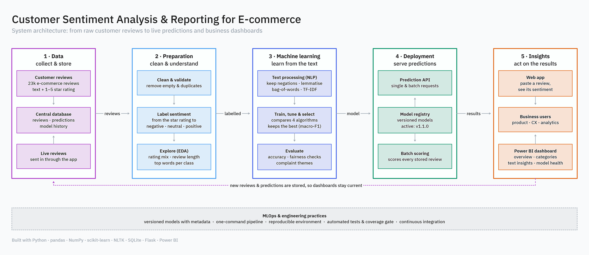

Star ratings say how happy customers are, not why, and new feedback (support messages, social posts) often has no rating at all. The goal is to classify review text as negative, neutral or positive, store every prediction, serve the model through an API, and show the results to business teams.

| Class | Precision | Recall | F1 |
|---|---|---|---|
| Negative | 0.58 | 0.60 | 0.59 |
| Neutral | 0.43 | 0.50 | 0.46 |
| Positive | 0.94 | 0.91 | 0.93 |
Winner: tuned Multinomial Naive Bayes (α = 0.5). All acceptance gates pass: macro-F1 ≥ 0.65, beats the baseline, minority recall ≥ 0.30. No department or age band is more than 6 points from the overall score.
Limitations: neutral is the weakest class, because 83% of 3-star reviews mix praise and complaints. Very short or off-topic text can lean positive. Labels come from star ratings, so they are a proxy.
POST /predict, /predict/batch (≤ 100), GET /reviews, /stats, /health, /model/info. Local latency p50 ≈ 24 ms, p95 ≈ 134 ms./: paste reviews and see the label and class probabilities./dashboard: overview, categories, text insights and model monitoring, read live from SQL.make all = ingest → EDA → train → batch-score → export (about 4½ min).make setup → make data → make train → make serve, then open localhost:5000 and /dashboard. On Windows use .\make.ps1 <target>. Dataset goes in the data folder as reviews.csv.